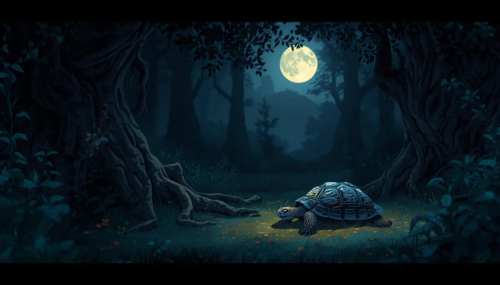
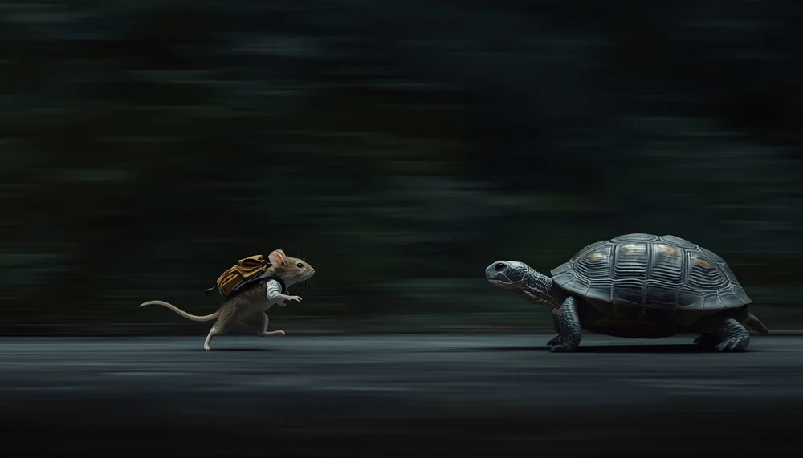

La Carrera de las Tortugas de Plata
Hola, pequeño explorador. Qué momento tan especial hemos elegido para encontrarnos.
El sol ya se ha ido a descansar y es hora de que tú también prepares tu nido. Ponte muy cómodo bajo tus mantas.

¿Sabes qué? Hoy quiero contarte el secreto de las tortugas de plata. En un valle muy tranquilo, vivían unas tortugas mágicas que nunca, nunca tenían prisa.
Mientras los demás animales corrían de aquí para allá mirando el reloj, ellas sabían que el mejor lugar del mundo es el sitio en el que ya estás.
Para entrar en este cuento de calma, vamos a usar una llave mágica: tu respiración. Pon tus manitas sobre tu barriga, justo encima del ombligo.
Imagina que al inspirar aire por la nariz, entra una luz plateada y suave como el caparazón de una tortuga. Nota cómo tu barriguita sube y se infla despacito.
Mantén esa luz un segundito dentro de ti... Ahora, expulsa el aire muy despacio por la boca, como si soplaras una vela sin querer apagarla.
Siente cómo tus manos bajan y tu cuerpo se siente más y más pesado, tranquilo y en paz.

Imagina que estás sentado sobre la hierba fresca de la noche, viendo pasar la gran carrera de las tortugas de plata.
Una de ellas, llamada Dora, da dos pasos muy lentos y se detiene por completo.
Un ratoncillo pasa corriendo a su lado y le grita: ¡Dora, date prisa, te vas a quedar atrás! Pero Dora sonríe con calma, baja la cabecita y le enseña algo maravilloso:
Al lado de su patita, una pequeña hormiga está cargando una hojita verde. Dora se queda un buen rato mirando a la hormiga, sintiendo el viento en su cara.
Para ella, ese momento no es perder el tiempo; es el viaje entero.
Dora nos enseña que no hace falta correr para ser valioso, y que cada paso tuyo, a tu propio ritmo, es perfecto.
Tu corazón ahora está lleno de calma. Imagina que tú también eres una tortuga de plata descansando bajo las estrellas.
No hay meta, no hay prisa, no hay cronómetro. Solo está el suelo firme bajo ti y el aire suave acariciando tu cara.
Eres un niño valiente, eres especial y hoy lo has hecho muy bien.
Mientras tú descansas, tu cuerpo recupera fuerzas y tu mente procesa todos los tesoros del día. Confía en tu propio tiempo y en tu propia paz.
Entrega todo tu peso a la almohada. Confía en la noche. Buenas noches, pequeña tortuga de plata. Que tus sueños sean dulces.